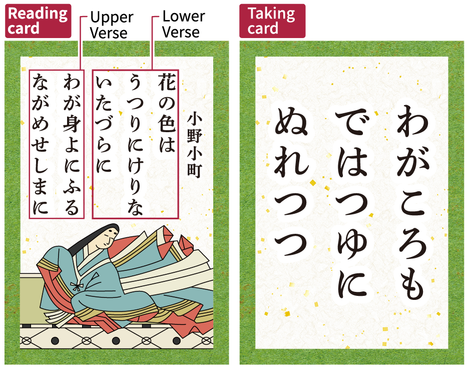
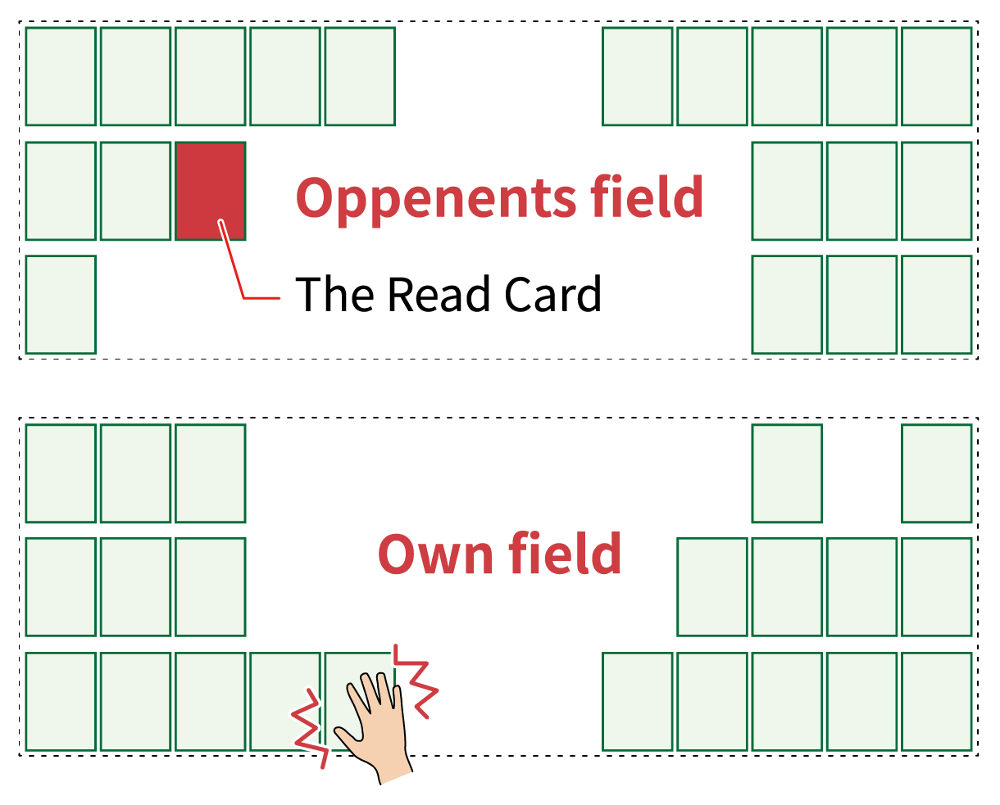
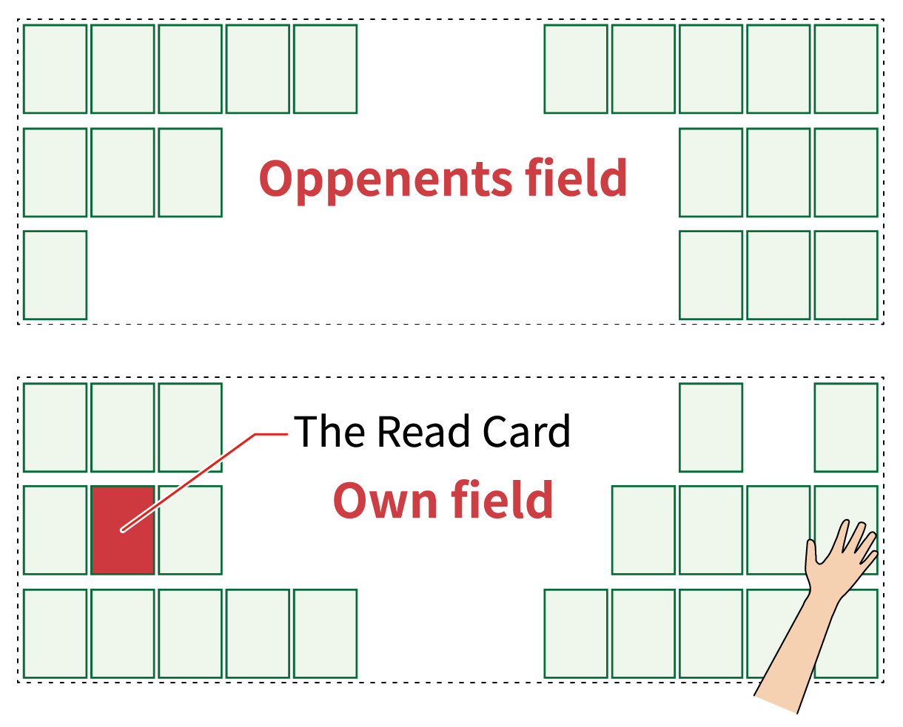
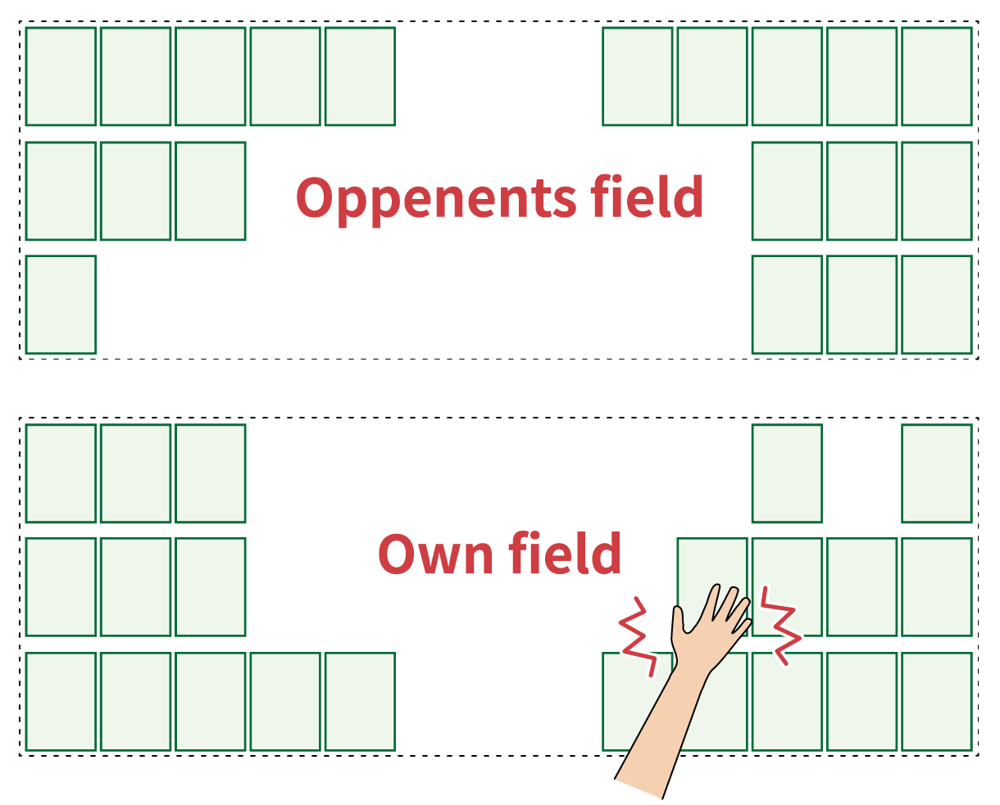

Competitive Karuta Game
Select difficulty
※ Reader: Noriko Makifuji
Competitive Karuta Rules
- In competitive karuta, players quickly grab the card corresponding to the poem being read aloud.
-
The reading card (yomifuda) and the taking card (torifuda) are separate. The reading card has both the upper
and lower verse, while the taking card shows only the lower verse in hiragana without voiced consonant
marks.

Each poem has an upper verse and a lower verse.
The reader (dokushu) recites the upper verse, and players quickly grab the corresponding lower-verse card (torifuda).
Memorizing both upper and lower verse pairs gives you an advantage. Mastering the kimariji (deciding syllables) lets you take cards at the earliest possible moment. The kimariji is the unique syllable(s) that identify each card. For example, this card's kimariji is "hanano" — a skilled player grabs the card the instant the reader says "hanano."
- Each player arranges cards in front of them.
Cards in your area are your "own field" (jijin); cards in front of your opponent are the "opponent's field" (tekijin). - You win when all cards in your field are gone before your opponent's.
- You can freely arrange your field. During the memorization time before the match you can rearrange them. In this game cards start randomly placed, but you can drag them into any order.
-
False start (otetsuki) rules:

Touching a card in the wrong field for the poem being read is a false start

Touching a different card in the same field as the correct card
is NOT a false start
When the poem read is a dead card (not on the field),
touching any card is a false start - A false start means you receive one penalty card from your opponent. If your opponent makes a false start, you can send one card from your field to theirs.
- Practice false start rules with our interactive page: False Start Judgment Simulator.
Game-Specific Rules
- During the memorization period before the match, you can rearrange the cards in your territory.
- For 5 seconds after receiving a sent card during the match, you can rearrange the cards in your territory.
- You can choose the total number of cards (your territory + opponent's territory): 6, 12, 24, or 50.
- To prevent the playing area from expanding, you cannot send cards beyond the opponent's initial card limit.
- In actual competitive karuta, the first half and second half of the same poem are not read consecutively. When moving on to the next poem, the reader first recites the second half of the previous poem, and only then begins the first half of the next poem. However, in this game, the first and second halves of the same poem are read consecutively for the sake of clarity and ease of understanding.
- Winning in 24-card mode counts as 2 wins, and winning in 50-card mode counts as 5 wins.
- On smartphones, only 6-card and 12-card modes are available. 24-card and 50-card modes require a PC in landscape orientation.
- In 24-card and 50-card modes, poems with no corresponding card on the field (dead cards) are also read. Touching a card when a dead card is read counts as a fault.
🏆 Sign in with Google to automatically
record your wins in the ranking!
- Log in with your Google account and win games to appear in the ranking.
-
When you log in, we retrieve your Google account's display name, email address, and profile photo URL.
This information is used solely for displaying the ranking and will not be shared with third parties except as required by law.
See our Privacy Policy for details. - After logging in, a "Delete Data" button appears next to "Sign out." Clicking it permanently removes your ranking records — this cannot be undone.
- A title badge is displayed next to your name based on total wins. Click "Title List" below to see details.
🎖 Title List
| Total Wins | Title | Description |
|---|---|---|
| 1+ | Scholar 文章生 |
Student at the Imperial University. |
| 3+ | Gifted Scholar 文章得業生 |
Outstanding student. |
| 5+ | Junior Secretary 少内記 |
Official handling imperial edicts. |
| 10+ | Professor 文章博士 |
Professor at the Imperial University. |
| 20+ | Chief Secretary 蔵人頭 |
Emperor's personal secretary. |
| 40+ | Senior Official 左中弁 |
Elite government official. |
| 70+ | Councillor 参議 |
Joining the nobility. |
| 120+ | Middle Counselor 中納言 |
Senior court official. |
| 200+ | Major Counselor 大納言 |
Pillar of the imperial court. |
| 300+ | Minister of the Right 右大臣 |
Top court official. |
| 400+ | Exiled Governor 大宰権帥 |
Demoted and exiled. |
| 500+ | Vengeful Spirit 怨霊 |
Lightning strikes the palace. |
| 700+ | Minister of the Left 左大臣 |
Awarded posthumously. |
| 1000+ | Grand Minister 太政大臣 |
Awarded posthumously. |
| 1500+ | God of Learning 天神様 |
Deity of scholarship. |
※ Titles are modeled after the career of Sugawara no Michizane.